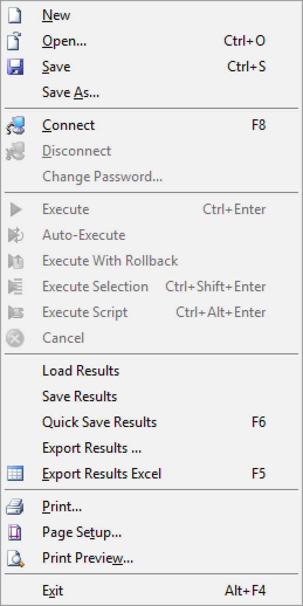
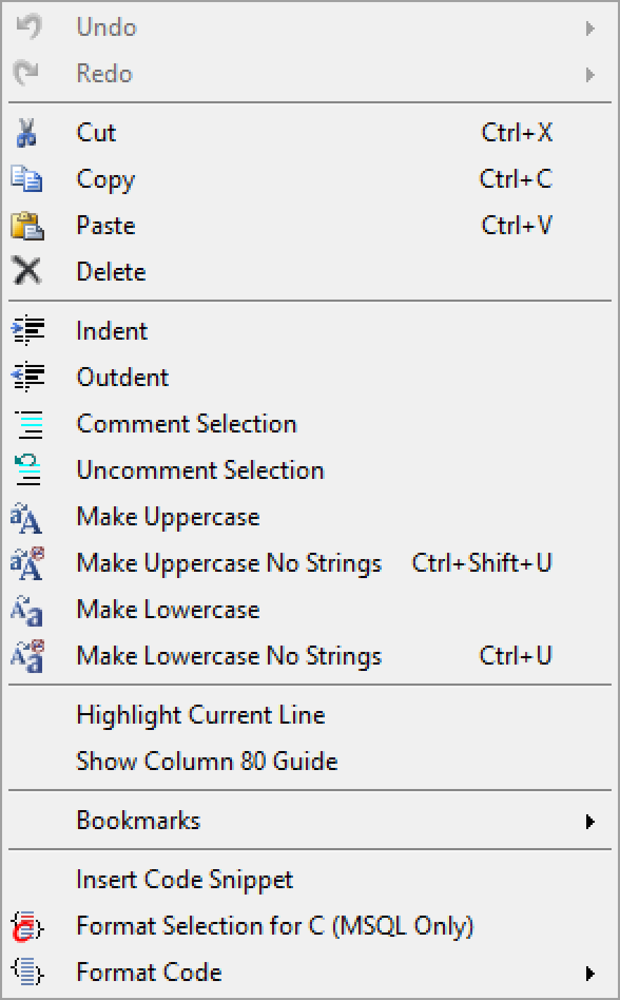
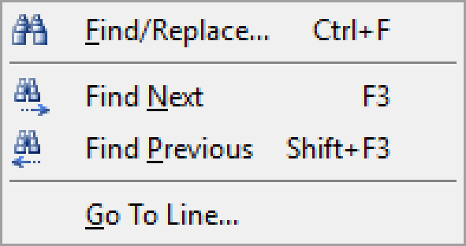
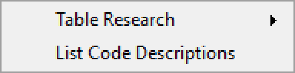
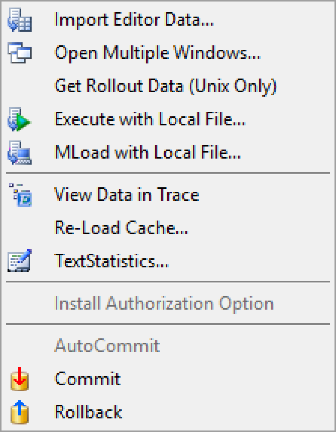
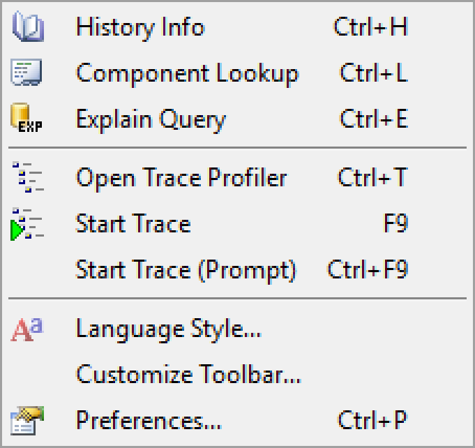
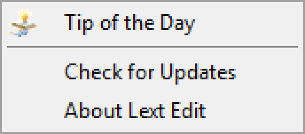

Complete reference for all LextEdit menu items.
File

| Item |
Shortcut |
Description |
| New |
|
Opens a new editor tab |
| Open |
Ctrl+O |
Opens a file from disk |
| Save |
Ctrl+S |
Saves the current file |
| Save As... |
|
Saves the current file under a new name |
| Connect |
F8 |
Opens the Connection Information window |
| Disconnect |
|
Closes the active connection |
| Change Password |
|
Changes the password for the current connection |
| Execute |
Ctrl+Enter |
Executes the current command context |
| Auto-Execute |
|
Opens the Auto Execution configuration |
| Execute With Rollback |
|
Executes the command; rolls back on error |
| Execute Selection |
Ctrl+Shift+Enter |
Executes only the selected text |
| Execute Script |
Ctrl+Alt+Enter |
Executes the entire file |
| Cancel |
|
Cancels the current execution |
| Load Results |
|
Loads a saved result file into the grid |
| Save Results |
|
Saves the current grid to a file |
| Quick Save Results |
F6 |
Quickly saves grid results to the default location |
| Export Results... |
|
Opens export options for the grid |
| Export Results Excel |
F5 |
Exports the grid to a Microsoft Excel spreadsheet |
| Print... |
|
Prints the current document |
| Page Setup... |
|
Configures print page settings |
| Print Preview... |
|
Shows a print preview |
| Exit |
Alt+F4 |
Closes LextEdit |
Edit

| Item |
Shortcut |
Description |
| Undo |
|
Undoes the last action |
| Redo |
|
Redoes the last undone action |
| Cut |
Ctrl+X |
Cuts the selection |
| Copy |
Ctrl+C |
Copies the selection |
| Paste |
Ctrl+V |
Pastes from clipboard |
| Delete |
|
Deletes the selection |
| Indent |
|
Indents the selected lines |
| Outdent |
|
Outdents the selected lines |
| Comment Selection |
|
Comments out the selected lines |
| Uncomment Selection |
|
Removes comment markers from selected lines |
| Make Uppercase |
|
Uppercases all selected text |
| Make Uppercase No Strings |
Ctrl+Shift+U |
Uppercases selected text, preserving string literals |
| Make Lowercase |
|
Lowercases all selected text |
| Make Lowercase No Strings |
Ctrl+U |
Lowercases selected text, preserving string literals |
| Highlight Current Line |
|
Toggles highlighting of the current line |
| Show Column 80 Guide |
|
Toggles a vertical guide at column 80 |
| Bookmarks |
|
Bookmark management submenu |
| Insert Code Snippet |
|
Inserts a pre-defined code template |
| Format Selection for C (MSQL Only) |
|
Converts selected MOCA/MSQL code to a C sprintf string |
| Format Code |
|
Formats the entire editor content |
Search

| Item |
Shortcut |
Description |
| Find/Replace... |
Ctrl+F |
Opens the Find and Replace window |
| Find Next |
F3 |
Finds the next match |
| Find Previous |
Shift+F3 |
Finds the previous match |
| Go To Line... |
|
Jumps to a specific line number |
Custom Commands

| Item |
Description |
| Table Research |
Search schema information |
| List Code Descriptions |
Find long description of abbreviated codes and descriptions |

| Item |
Shortcut |
Description |
| Import Editor Data... |
|
Imports text from the editor into the results grid |
| Open Multiple Windows... |
|
Opens multiple editor windows |
| Get Rollout Data (Unix Only) |
|
Retrieves rollout data (Unix systems only) |
| Execute with Local File... |
|
Runs the editor command against rows in a local CSV file |
| MLoad with Local File... |
|
Runs an MLoad operation using a local CSV file |
| View Data in Trace |
|
Opens selected data in the Trace Profiler |
| Re-Load Cache... |
|
Reloads the MOCA cache |
| Text Statistics... |
|
Shows statistics about the current document |
| Install Authorization Option |
|
Installs an authorization option |
| AutoCommit |
|
Toggles AutoCommit mode |
| Commit |
|
Commits the current transaction |
| Rollback |
|
Rolls back the current transaction |
View

| Item |
Shortcut |
Description |
| History Info |
Ctrl+H |
Opens the Command History window |
| Component Lookup |
Ctrl+L |
Opens the Component Lookup window |
| Explain Query |
Ctrl+E |
Opens the Explain Query window |
| Open Trace Profiler |
Ctrl+T |
Opens the Trace Profiler |
| Start Trace |
F9 |
Starts a MOCA trace using the login name as profile |
| Start Trace (Prompt) |
Ctrl+F9 |
Starts a MOCA trace with a custom profile name |
| Language Style... |
|
Opens the language/syntax style selector |
| Customize Toolbar... |
|
Customizes the toolbar layout |
| Preferences... |
Ctrl+P |
Opens the application preferences window |
Help

| Item |
Description |
| Tip of the Day |
Shows a usage tip |
| Check for Updates |
Checks for a newer version of LextEdit |
| About LextEdit |
Displays version and license information |
{kind=link}
{kind=link}
{kind=link}
{kind=link}
{kind=link}
{kind=link}
{kind=link}